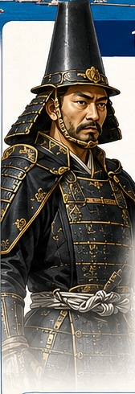
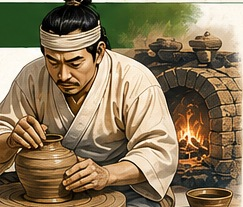
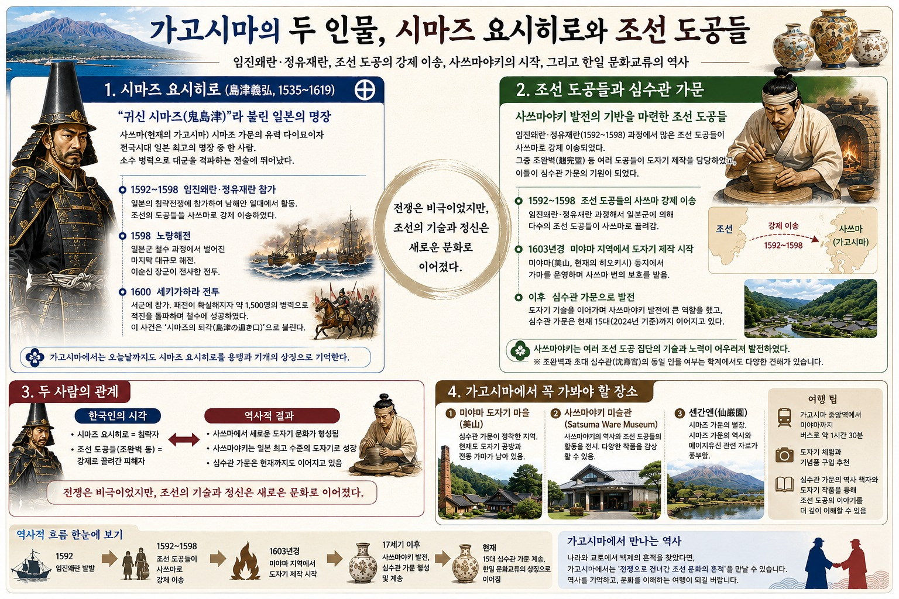

임진왜란·정유재란, 조선 도공의 강제 이송, 사쓰마야키의 시작, 그리고 한일 문화교류의 역사
그림 출처 안내 — 이 자료의 사진·그림은 사용자가 올린 인포그래픽 이미지에서 잘라낸 것입니다. 원 촬영자·제작자·이용 허락을 알 수 없고, 화풍으로 보아 AI로 생성한 이미지가 섞여 있을 수 있습니다. 책에 싣는 용도로는 쓸 수 없으며, 출간 때는 직접 촬영하거나 이용 허락을 받은 사진·공개 도판으로 바꿔야 합니다. 특히 인물 그림(시마즈 요시히로, 도공), 해전·전투 그림은 일러스트입니다.
원본 인포그래픽의 오류 가능성
인포그래픽은 조선 도공 중 한 사람으로 조완벽(趙完璧)을 들었으나, 조완벽은 정유재란 때 포로가 되어 동아시아 각지를 떠돈 진주 출신 선비로 알려져 있고(「조완벽전」), 사쓰마 도공으로 확인되지 않습니다. 사쓰마야키의 시조로는 박평의(朴平意)가 한국민족문화대백과에 실려 있습니다.
‘1603경 미야마에서 제작 시작’, ‘15대 심수관(2024년 기준)’, 가고시마 중앙역에서 버스 약 1시간 30분 등은 원문 수치이므로 확인이 필요합니다.
1. 시마즈 요시히로 (島津義弘, 1535~1619)

시마즈 요시히로 일러스트(원본에서 잘라냄)
“귀신 시마즈(鬼島津)”로 불린 장수
사쓰마(지금의 가고시마) 시마즈 가문의 유력 다이묘입니다. 소수 병력으로 대군을 격파하는 전술로 이름났다고 인포그래픽은 설명합니다.
1592~1598 임진왜란·정유재란 참전. 남해안 일대에서 활동했고 조선 도공을 사쓰마로 데려갔습니다.
1598 노량해전 — 일본군 철수 과정의 마지막 대규모 해전, 이순신 장군 전사.
1600 세키가하라 전투 — 서군에 참가했다가 패색이 짙어지자 약 1,500명으로 적진을 돌파해 철수했습니다. 이를 ‘시마즈의 퇴각(島津の退き口)’이라 부릅니다.
노량해전(일러스트)세키가하라 전투(일러스트)사쿠라지마와 가고시마 만(원본에서 잘라냄)
가고시마에서는 지금도 시마즈 요시히로를 용맹과 기개의 상징으로 기억합니다.
2. 조선 도공들과 심수관 가문
사쓰마야키의 기반
임진·정유재란 때 많은 조선 도공이 사쓰마로 강제 이송되었고, 이들이 사쓰마야키(薩摩焼)와 심수관 가문의 출발이 되었습니다.
1592~1598 조선 도공들이 사쓰마로 연행됨 대규모 연행은 정유재란 말기(1598)
1603경 미야마(美山) 지역에서 도자기 제작 시작, 번(藩)의 보호를 받음
이후 심수관 가문으로 이어져 현재 15대까지 계승(원문, 2024년 기준)

도공 일러스트(원본에서 잘라냄)사쓰마야키 도자기(원본에서 잘라냄)
보충 — 사쓰마야키의 시작 확인함
한국민족문화대백과는 박평의(朴平意, 1558~1623, 전남 남원 출생)가 1598년 정유재란 때 시마즈 요시히로에게 잡혀 사쓰마로 끌려갔고, 처음 상륙한 히오키군 구시키노시마비라에서 가마를 열었다가 약 5년 뒤 나에시로가와(현 히가시이치기초, 미야마 일대)로 옮겼다고 서술합니다. 인포그래픽의 ‘1603경 미야마’와 시기가 이어집니다. 심당길(沈當吉)과 심수관 가문의 계보는 이 페이지에서 확인하지 못해 별도 조사가 필요합니다.
미야마 마을 풍경(원본에서 잘라냄)
3. 두 사람의 관계
한국인의 시각
역사적 결과
시마즈 요시히로 = 침략자 조선 도공들 = 강제로 끌려간 피해자
사쓰마에서 새로운 도자기 문화가 형성됨 사쓰마야키는 일본 최고 수준의 도자기로 성장 심수관 가문은 현재까지 이어짐
“전쟁은 비극이었지만, 조선의 기술과 정신은 새로운 문화로 이어졌다.”
인포그래픽의 결론 문장입니다. 한국에서는 이 말이 연행의 폭력성을 가린다는 비판도 있으므로, 책에서는 연행 당한 사람의 삶(신분 제약, 마을 형성, 성씨 유지)을 함께 다루는 균형이 필요합니다.
4. 가고시마에서 가 볼 곳
① 미야마 도자기 마을 — 심수관 가문이 정착한 지역, 전통 가마가 남아 있음② 사쓰마야키 미술관(Satsuma Ware Museum) — 역사와 조선 도공의 활동 전시③ 센간엔(仙巌園) — 시마즈 가문의 별장, 메이지 유신 관련 자료
여행 팁 (원문)
가고시마 중앙역에서 미야마까지 버스로 약 1시간 30분 확인 필요
도자기 체험과 기념품 구입
심수관 가문의 역사 책자와 도자기 작품으로 조선 도공 이야기를 이해
5. 역사 흐름 한눈에
1592임진왜란 발발
1592~1598조선 도공들이 사쓰마로 강제 이송
1603경미야마 지역에서 도자기 제작 시작
17세기 이후사쓰마야키 발전, 심수관 가문 형성
현재15대 심수관 가문 계승, 한일 문화교류의 상징
확인 필요 사항
조완벽 서술 삭제 또는 교정(박평의·심당길 등 문헌상 인물로 바꿀 것)
연행 인원·시기(1597~1598), 연행 경로(구시키노시마비라 → 나에시로가와)
심수관 가문의 계보와 15대 현황, 심수관(沈壽官)·심당길의 관계
‘사쓰마야키 미술관’의 정확한 명칭·위치·개관 여부 (원문 표기만 옮김)
시마즈 요시히로 ‘일본 최고의 명장’ 평가는 인포그래픽의 서술이며 사료로 뒷받침해야 함
1598 노량해전 참전 경과와 세키가하라 ‘퇴각’ 병력(약 1,500명)은 확인 필요
원본 인포그래픽

사용자가 올린 원본 인포그래픽(제목: 가고시마의 두 인물, 시마즈 요시히로와 조선 도공들)